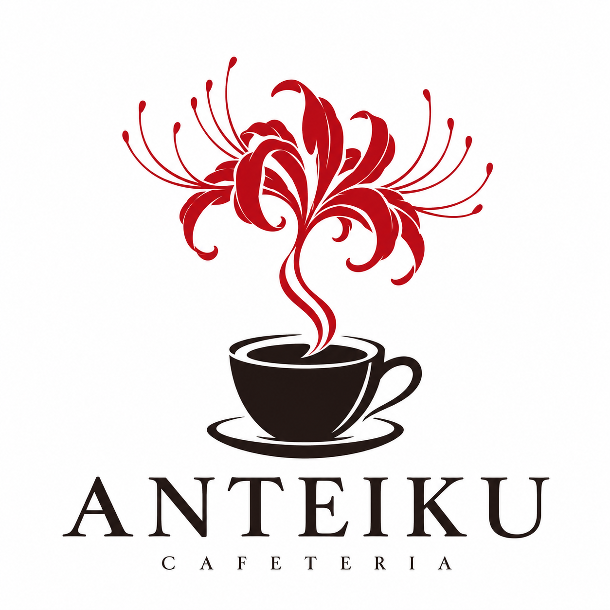

Café Expresso
R$ 8,00Café intenso e preparado na hora. O clássico que transforma uma simples pausa.
INTENSO & AROMÁTICO
Escolha seu caféCAFÉ & BOAS PAUSAS
Desacelere, sinta o aroma e aproveite o momento. Na Anteiku, cada xícara é um convite para ficar mais um pouco.
Explore nosso cardápioESCOLHA O SEU FAVORITO
Do intenso ao cremoso,
um café para o seu ritmo.
Café intenso e preparado na hora. O clássico que transforma uma simples pausa.
INTENSO & AROMÁTICOCafé com leite cremoso e um toque de chocolate. Para saborear sem pressa.
SUAVE & ACONCHEGANTEExpresso com leite vaporizado e uma fina camada de espuma. Uma combinação suave e cremosa.
LEVE & AVELUDADOExpresso, chocolate e leite vaporizado, finalizados com espuma cremosa. Uma pausa com um toque de doçura.
CREMOSO & ACHOCOLATADOA ESSÊNCIA ANTEIKU
Acreditamos que os melhores momentos moram nas coisas simples: no aroma do café fresco, na primeira xícara do dia e numa boa conversa. A Anteiku é um convite para aproveitar tudo isso.
Encontre sua próxima pausaVENHA NOS VISITAR
Esperamos você para um bom café.
FALE COM A ANTEIKU
Tire suas dúvidas e converse com a gente pelo WhatsApp.
(35) 99762-7216 (WhatsApp, abre em nova aba)ENCONTRE A ANTEIKU
Rua Antonio Francisco Domingues, nº 87
Fortaleza de Minas · MG